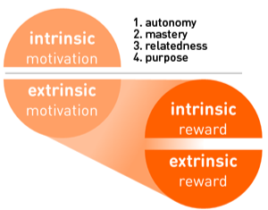

Key Insight
- Users are motivated to exercise through the promise of self-actualisation and/or physical rewards, but
oftentimes such motivations do not exist or are not compelling enough.
Depth of Insight
User Needs
- Behind every action is a motivation. Oftentimes, if the motivation is lacking, then nothing is accomplished.
As humans, we want to be motivated to action and we often look for methods to do so. Users of the application
look to the application as a method of motivating them to exercise through the incentives provided through it.
User Goals
- Users want to be motivated to exercise. They want to understand what can best motivate them, whether it be in
the form of a physical reward or self-actualization. Their hopes are that the application can provide them with
sufficient motivation to exercise or even incorporate it into their daily routine.
User Challenges
- Most people do not know what they want or what exactly could motivate them. It may take extensive surveying,
questioning, and feedback from the users themselves to help both the developers and the users understand what
might best motivate and incentivize someone to exercise.
Grounding Evidence

- MikeW. “Intrinsic vs. Extrinsic Rewards (and Their Differences from Motivations).” Khoros Community, 5 Feb.
2020,
https://community.khoros.com/t5/Khoros-Communities-Blog/Intrinsic-vs-Extrinsic-Rewards-and-Their-Differences-from/ba-p/128969.
- Users want all kinds of rewards. When we conducted our interviews, people named all sorts of things from
physical rewards such as coupons or even online game rewards to just rewards as simple as being able to enjoy
the outdoors. They talked about rewards being tied to motivation. One way to look at the difference is that
“motivations generally come before the behavior, but rewards come after the behavior.” One thing that we
definitely noticed was that extrinsic rewards were far more preferred than intrinsic. If everyone liked
exercising for the sake of exercising, then we would not even need to develop our application!
- Richter, Ganit, et al. “ Studying Gamification: The Effect of Rewards and Incentives on Motivation .” UChicago
Lectures, University of Chicago, 2015,
https://www.classes.cs.uchicago.edu/archive/2019/fall/20900-1/lecs/GamificationChapter.pdf
- While interviewees talked mainly about extrinsic rewards, intertwining intrinsic rewards and motivations are
also of critical importance. For example, many mentioned how they wanted to stay healthy and feel good about
their body and themselves. Research suggests that “careful selection and implementation of these motivators will
trigger internal motivation and aid in maintaining it.” In games, this is often done through the existence of a
leaderboard or a progress bar to generate excitement and commitment to complete a task or repeat an experience.
Likewise, we believe such methods can help create motivation for users to exercise and help them in discovering
what may motivate them.
- Muntean, C. I. (2011). Raising engagement in e-learning through gamification. Proceedings 6th International
Conference on Virtual Learning ICVL (pp. 323–329), Cluj-Napoca, Romania, Europe.
- One insight we gathered from asking our interviewees about how they might be motivated to exercise was the
potential for gamification. In a research article written by Muntean, he noted that gamification has the ability
to combine two motivations: “on one hand using extrinsic rewards such as levels, points, badges to improve
engagement while striving to raise feelings of achieving mastery, autonomy, sense of belonging.” These
techniques have been successfully incorporated across all kinds of applications and software.